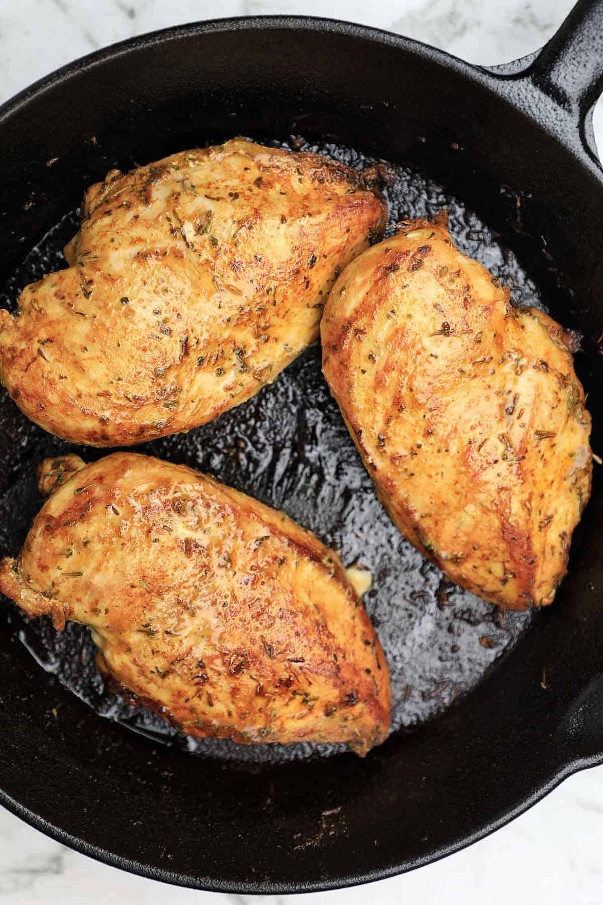

Pan fried chicken breasts recipe! These fried boneless skinless chicken breasts are crispy, healthy, flavorful, juicy, tender, and delicious. Quick to make taking less than 20 minutes to pan fry in a skillet, you can serve with potatoes, vegetables or any side of choice. They can also be used for quick meals such as sandwiches, wraps, and salads.
Pan frying chicken is one of the healthiest and quickest methods of cooking chicken and this boneless chicken breasts recipe is quick, easy, and simple that's why it's one of my go-to when I need to rustle up a quick meal.
Fry - Place a skillet on medium heat then add in vegetable or sunflower oil. Arrange the chicken breasts in the skillet with the smooth side down.
Pan fry on medium heat for 5-7 minutes without moving them then turn the chicken breasts to the other side. Fry for another 5-7 minutes or until cooked through. Add in garlic butter and stir until fragrant then scoop to cover the chicken with it (Optional step).